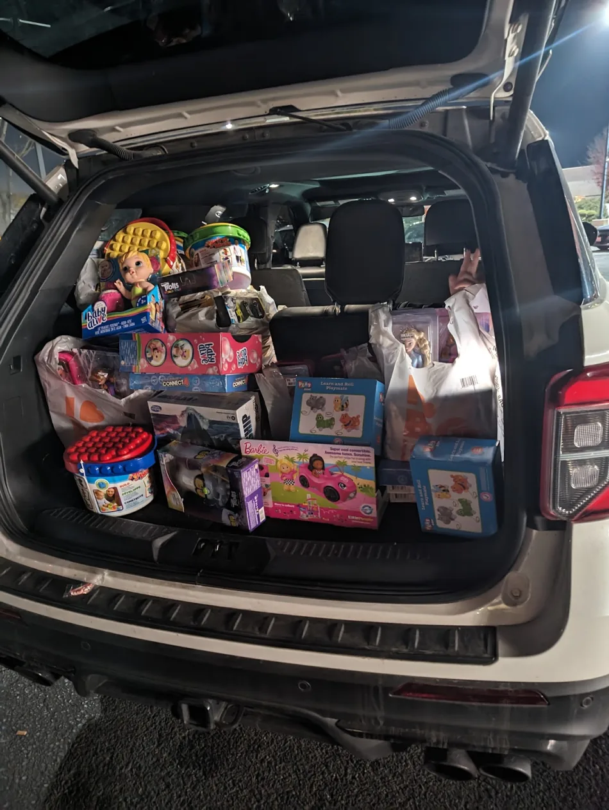
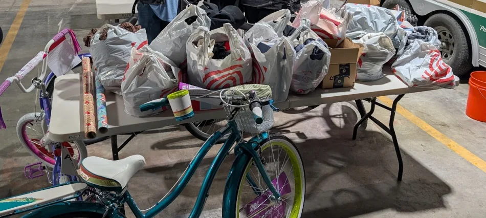

GameChangersAI (Hatzer Family) Toy Drive
Every Christmas, our family collects toys for kids in Merced County. If you know us as Team Charity Case, you’re in the right place.

How to give

It started with a blue bicycle
On Christmas morning in 1986, five-year-old Will Hatzer woke up to his first bike, thanks to donations at his local firehouse. At 13, he started collecting toys through a firehouse in Columbus, Ohio. He brought the tradition to California, where neighbors, car clubs, and local businesses joined in.
Why GameChangers AI?
We started GameChangers AI, our 501(c)(3) nonprofit, to teach kids and adults how to use AI. This Christmas we used ChatGPT to match the lights on our house to the music. Come see the show when you’re in the neighborhood.
Team Charity Case archive
Our old posts are still here, including toy pickups, raffle updates, and the video games our kids made.